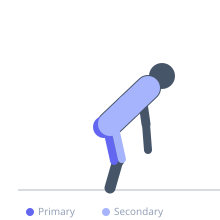
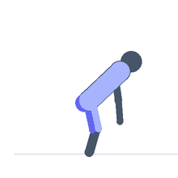

Exercise guide / Sumo Deadlift
Sumo Deadlift
The sumo deadlift is a variation of the conventional deadlift performed with a wide stance and toes pointed significantly outward. The grip is placed inside the legs rather than outside. This stance reduces the range of motion and shifts relative emphasis toward the hip adductors, glutes, and quadriceps compared to the conventional deadlift, while also generally requiring less lower back extension.
Primary muscles
gluteus maximus
adductor magnus
biceps femoris long head
Secondary muscles
rectus femoris
erector spinae
trapezius upper
Stabilizers
transverse abdominis
Equipment
Standard Barbell
Weight Plates
Optional
Lifting Straps


Starting position
- Stand with feet 1.5 to 2 times shoulder width apart, toes pointed out 45–60 degrees. Grip the bar inside the legs with either a double overhand or mixed grip. Hips lower than conventional, shins more vertical.
Setup
- Place the barbell over mid-foot as with the conventional deadlift. The wider stance means the bar can be lifted over a shorter distance.
Steps
- Squeeze the knees outward, bracing the core hard.
- Drive the floor apart with your feet (externally rotate) while lifting the bar.
- Keep the bar close to the body — drag it up the inner thighs.
- Lock out the hips and knees at the top.
Coaching cues
- Push the floor apart — spread the floor with your feet
- Lead with your chest as you lift — do not let the hips shoot up first
Breathing
- Full breath and brace before the pull. Exhale at lockout.
Range of motion
- Full extension at lockout. Bar starts on the floor.
Tempo
- 1-0-2-0
Common mistakes
- Knees caving inward — actively push them out in line with the toes
- Hips rising faster than the shoulders, turning it into a stiff-leg deadlift
- Bar drifting forward away from the body
Safety
- Hip mobility is a prerequisite — not suitable if hip external rotation is severely limited
- Avoid if groin strain is present
Training
- strength: 1–5 reps
- hypertrophy: 5–8 reps
- strength: 3–6 sets
- hypertrophy: 3–4 sets
- Rest: {'strength': 240, 'hypertrophy': 120}